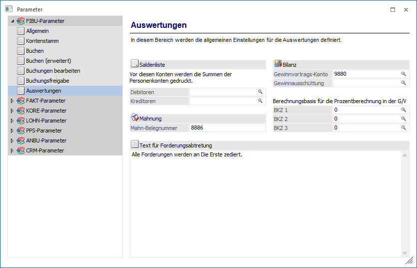
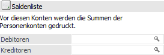
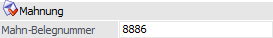
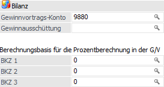
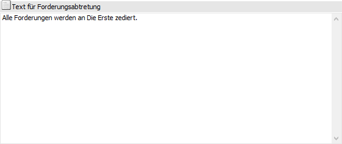

Über den Bereich "FIBU-Parameter -Auswertungen" können Einstellungen für die Auswertungen der WinLine FIBU vorgenommen werden.
Hinweis
Standardmäßig wird das Fenster in einem "Lesemodus" geöffnet, d.h. es können die bestehenden Einstellungen kontrolliert, Änderungen allerdings nicht durchgeführt werden. Hierfür muss zunächst mit Hilfe des Buttons "Bearbeiten" der "Bearbeitungsmodus" aktiviert werden. Alternativ kann diese Aktivierung auch über das Kontextmenü der rechten Maustaste (Funktion "Applikation xxx bearbeiten") erfolgen.

Saldenliste

Ø Debitoren / Kreditoren
In den Feldern können Sachkonten eingetragen werden, vor denen bei Listauswertungen die Summen der Debitoren- oder Kreditorenkonten angedruckt werden sollen. Erfolgt hier kein Eintrag, erhält man (wie bisher) die Debitoren- und Kreditorensummen am Ende der Auswertung angedruckt. Diese Option wird nur bei Auswertungen unterstützt, bei denen eine Sortierung nach Konto oder Kontenklassen möglich ist.
Mahnung

Ø Mahn-Belegnummer
Für den Ausdruck von Mahnungen kann ein eigener Nummernkreis vergeben werden, welcher dann auf den Mahnungen (Achtung: nur bei der Ausgabe auf Drucker und nur mit der Option "Kontoauszug") angedruckt werden kann.
Die Nummer, die bei der nächsten Mahnung vergeben wird, wird im Feld "Mahn-Belegnummer" hinterlegt. Bei jedem Druck einer Mahnung mit der Option ""Kontoauszug" wird nun die mandantenspezifische Mahnnummer hochgezählt. Diese Mahnnummer kann im Mahnformular mit der Variable 000/122 angedruckt werden.
Bilanz

Ø Gewinnvortrags-Konto
Hier kann das Gewinn- und Verlustkonto eintragen werden um den Gewinn- oder Verlust in der gesetzlich vorgegeben Staffelform der Erfolgsrechnung anzudrucken.
Ø Gewinnausschüttung
Dieses Konto wird in der G&V vor dem Gewinnvortrags-Konto berücksichtigt.
Ø BKZ1 / BKZ2 / BKZ3
In den 3 Feldern BKZ1, BKZ2 und BKZ2 kann jeweils die BKZ-Kennzahl eingetragen werden, aufgrund deren Wert die Prozentberechnung in der GuV berechnet werden soll.
Es werden jeweils die BKZ der Stufe 1 mit der hier festgelegten BKZ verglichen. Bei allen hierarchisch untergeordneten BKZ zeigt der Prozentsatz den Anteil an der Summe der übergeordneten BKZ an.
Text für Forderungsabtretung

Ø Text
Der Zessionstext wird in den Auswertungen "Kontoblatt" und "OP-Blatt" der WinLine FIBU angedruckt, wenn im Feld "Personenstamm - Register "FIBU" - Feld "Zahlungskennz." das Kennzeichen "Z" eingetragen wurde oder bei einzelnen Fakturen das OP-Kennzeichen auf "Z" gesetzt wurde.
Achtung
Wurde das Zessionskennzeichen (Z) auch nur bei einer Faktura gesetzt, wird trotzdem der Zessionstext am Konto- bzw. OP-Blatt angedruckt.